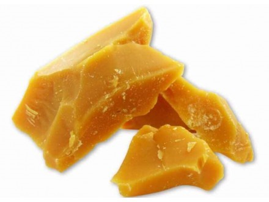

Propolis

Propolis is a natural resin collected by bees from tree buds. Known for its powerful antibacterial and healing properties, it’s used in traditional medicine and natural skincare. Our propolis is raw, unprocessed, and sourced directly from our hives.
$12.99 / 1 oz
Beeswax
Our pure, golden beeswax is perfect for candle making, salves, and cosmetics. It has a natural honey scent and is filtered but unrefined to retain its beneficial properties.
$9.99 / 100 g
Queen Bees

We offer mated queen bees of Carniolan and Buckfast breeds, carefully raised for strong genetics, productivity, and gentle temperament. Ideal for sustainable apiary management. Available for pickup or shipping (seasonal).
$35.00 each
Royal Jelly

Royal jelly is a nutrient-rich substance produced by nurse bees and fed to queens. It's valued for its antioxidants, vitamins, and potential immune-boosting effects. Our royal jelly is fresh and refrigerated upon harvest.
$24.99 / 1 oz (fresh)